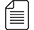

Piston
Piston is a special interest group dedicated to the engineering applications of Mechanical, Automation, Civil, Chemical and Material Sciences. The SIG functions as a platform for students interested in learning and advancing specific areas of knowledge and technology. The SIG members co-operate, communicate, and organise meets, talks and conferences to discuss latest technology advancement and application. The SIG talks and seminars are given for encompassing the real world applications, which bring together all eager learners. Workshops are regularly held to equip members with software skills like MATLAB, ANSYS, CATIA, AutoCAD etc. The SIG is an excellent forum to interact with experienced seniors and professionals.
Piston SIG collaborates with other SIG’s i.e. Diode and Python in learning and advancing in interdisciplinary areas such as Robotics, Mechatronics, Microcontrollers and Automation. The SIG also collaborates with SIGHT Chapter to discuss possible technological solutions for humanitarian application.
The SIG consists of 2 societies namely Mach (Mechanical, Automation and Chemical Engineering) and RAS (Robotics and Automation). The specific areas of technology in Piston can be classified as follows -
- Aerospace Engineering
- Automobile engineering
- Bio-Mechanical Applications
- Chemical and Thermal Engineering
- Heat and Energy Engineering
- Robotics, Controls and Mechatronics
- Structures and Materials
Projects
- RC Plane
- Hovercraft
- Bike Simulator
- Micro Aerial Vehicle (MAV) - Multi functional, militarily capable, small flight vehicles.
- Bioremediation of Oil Spill.
- Preparation and Characterization of Bamboo Charcoal/Silver Nano-composites
- Biosynthesis of Nanoparticles from Waste Biomass.
- Production of Biorenewable Chemicals and Biofuels from Non-edible feedstock.
{kind=link}